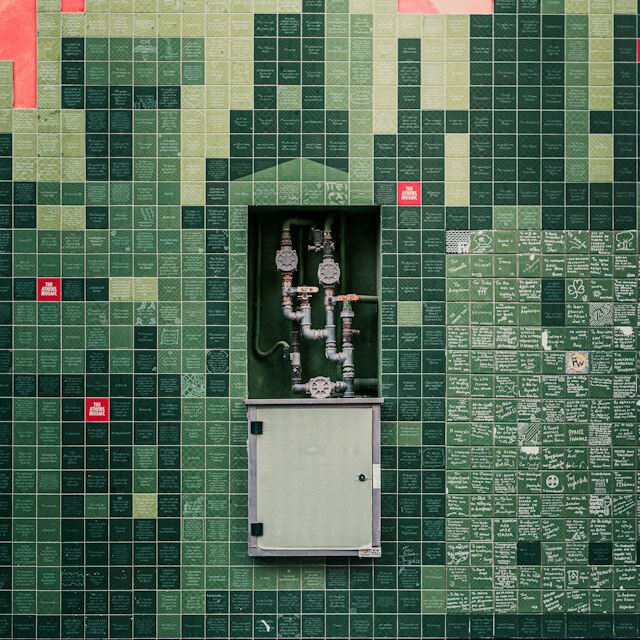
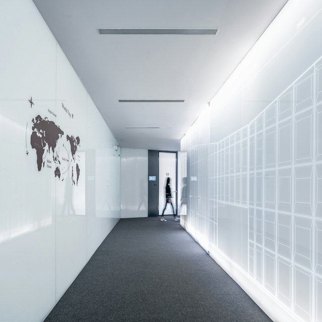
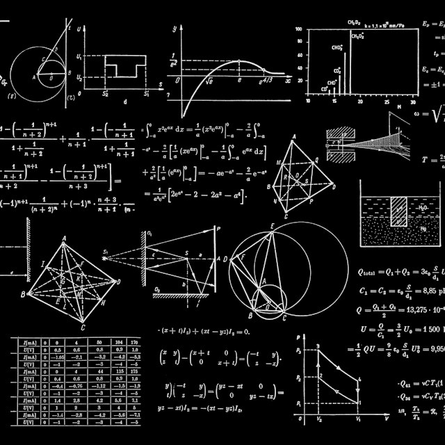

Get started with AstroWind to create a website using Astro and Tailwind CSS
Build a site with the free AstroWind template for Astro and Tailwind CSS. Create the project, edit the home page, publish a post and deploy it.
SaaS Web Demo
Elevate your website creation process with AstroWind's SaaS solutions.Seamlessly blend the power of Astro v7 and Tailwind CSS v4 to craft websites that resonate with your brand and audience.

Each of the following features enhances AstroWind's value proposition.
A powerful combination that enhances both the development process and the end-user experience: dynamic, visually stunning websites with optimized performance.
Startups, small businesses, agencies, portfolios: customize it to match the branding of your venture.
Showcase portfolio pieces, case studies and project highlights with widgets that only need props.
Six landing page demos designed to prompt action, plus a Markdown/MDX blog to share insights.
Static output, optimized images and best-practice code: better SEO and fewer bounces.
Both come built in: a theme toggle in the header and right-to-left layouts with one setting.
Semantic HTML, metadata, Open Graph, sitemap and RSS out of the box.
Works with your stack
No lock-in: standard Astro, standard Tailwind, deploy anywhere static files are served.
Discover how AstroWind's versatile template serves as the ideal solution for various use cases, providing tailored solutions to drive success.
Are you a startup with big dreams? AstroWind propels your success. Our template forges a seamless online presence, attracting investors and customers from day one. Astro v7 and Tailwind CSS v4 ensure striking, responsive sites, leaving lasting impressions. Countless startups leverage AstroWind to kickstart their journey and resonate with audiences.
Allow startups to quickly create professional websites without investing extensive time and resources.
Make a memorable first impression with visually appealing design elements that highlight your startup's unique value proposition.
Ensures your website looks stunning and works well on all devices.
Engage potential investors and customers with engaging content, clear messaging, and intuitive navigation.

For SaaS businesses, user experience is key. AstroWind enhances showcasing SaaS solutions intuitively. The template's Astro v7 and Tailwind CSS v4 integration guarantees user-friendly experience, mirroring your software's efficiency. Customize pages to communicate SaaS value and solutions for your audience.
Ensuring a cohesive and user-centric design for your SaaS website.
Effectively communicate complex SaaS features through visual aids, animations, and interactive elements.
Prioritize user needs and pain points through well-structured layouts and clear navigation.
Encourage visitors to take action with strategically placed CTAs.
Ensures your SaaS website works seamlessly across all devices.

Your portfolio is your masterpiece, and AstroWind is your canvas. Whether you're a designer, photographer, artist, or any other creative professional, AstroWind empowers you to showcase your work with elegance and sophistication. Tailored to highlight your creative projects, AstroWind's templates offer a visually immersive experience that lets your portfolio shine.
Serve as a captivating backdrop to showcase your creative work, capturing attention and leaving a lasting impression.
Tailor your portfolio to reflect your unique style and artistic vision.
Prioritizes visuals, allowing you to present your work in high-resolution detail that draws viewers into your creations.
Enables seamless navigation for effortless portfolio exploration.

For small businesses, a well-crafted website can be a game-changer. AstroWind empowers small businesses to not only establish a credible online presence but also convert visitors into loyal customers. The template's thoughtful design and optimization features ensure that your website doesn't just attract attention but also guides visitors through a seamless journey, ultimately leading to conversions.
Present your small business with a professional and polished website that instills confidence and trust among visitors.
Strategically placed CTAs, user-friendly forms, and optimized layouts work together to drive user engagement and conversions.
Ensure a smooth browsing experience, reducing bounce rates and encouraging interaction.
Access to core features and a wide range of templates
Tailored solutions for large-scale projects
Yes, AstroWind is designed to be compatible with the latest versions of both Astro and Tailwind CSS v4. This ensures that you can harness the full capabilities of these technologies while benefiting from the features offered by AstroWind.
Certainly! AstroWind is versatile and can be used for a wide range of projects, including both personal and commercial endeavors. Whether you're building a professional portfolio, launching a startup, or creating a marketing website, AstroWind has you covered.
While some familiarity with HTML, CSS, and web development concepts is helpful, the user-friendly interface and customization options allow those with limited coding experience to create impressive websites. For more advanced users, AstroWind offers extensive customization capabilities.
Absolutely, our dedicated customer support team is here to assist you with any questions or challenges you may encounter. Feel free to reach out to us through our support channels, and we'll be happy to provide the help you need.
Have questions? Feel free to contact us using the form below. We're here to help!
contact@support.com
+1 (234) 567-890
@example
Explore our collection of articles, guides, and tutorials on web development, design trends, and using AstroWind effectively for your projects.
Build a site with the free AstroWind template for Astro and Tailwind CSS. Create the project, edit the home page, publish a post and deploy it.
AstroWind ships an AGENTS.md and skills that teach any AI coding assistant the template. Which requests work well and how to keep the results reviewable.
Curated free tools and resources for building websites in 2026. Inspiration, UI kits, icons, illustrations, photos, colors, fonts, mockups and more.
Customize the AstroWind Astro template to your brand. Light and dark colors, fonts, logo, favicons, header and footer, and tokens for your own components.